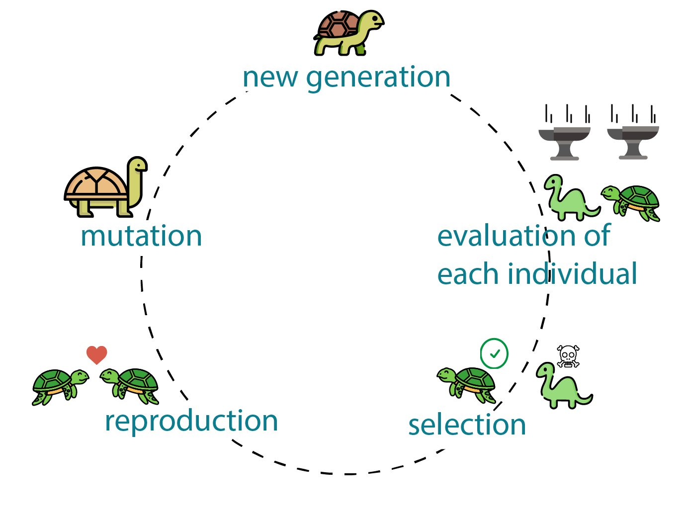

Definition of a genetic algorithm.
A genetic algorithm is a problem-solving method inspired by the process of natural selection in evolution. It is used to find the best solution among a set of possible solutions to a given problem. In a genetic algorithm, a population of potential solutions is generated and evolved over generations. Through a process of selection, crossover, and mutation, the algorithm explores and improves the solutions over time, aiming to find the optimal or near-optimal solution.
Sigmoid activation function.
A sigmoid activation function is a mathematical function commonly used in artificial neural networks. It maps the input values to a range between 0 and 1. The function has an S-shaped curve, resembling the letter "S." The sigmoid function is often used to introduce non-linearity in the output of a neuron, allowing neural networks to model more complex relationships between input and output data. It is particularly useful in tasks like binary classification, where the output needs to be a probability between 0 and 1.
Matrix multiplication.
Matrix multiplication is widely employed in AI applications, particularly in areas like deep learning and neural networks. In these fields, data is often represented as matrices, where rows indicate input samples and columns represent features or attributes. Matrix multiplication enables the calculation of weighted sums and activation functions across layers of neurons, facilitating the processing and transformation of input data. By performing matrix multiplications between input data and learnable parameters (weights and biases), neural networks can model intricate relationships and make predictions in tasks such as image recognition, speech processing, and recommendation systems. Matrix multiplication serves as a fundamental operation in AI, enabling crucial computations during training and inference processes.
Layers of a neural network.
My neural network consists of three layers. The first layer serves as the input layer, composed of a 12 by 120 matrix. In this matrix, each column contains information about the current game state, with the first value representing a specific aspect of the state, while the remaining values act as weights that establish connections and relationships within the data. The second layer is a hidden layer, with dimensions of 120 by 120. This layer plays a crucial role in enabling the neural network to learn intricate patterns and establish meaningful connections between the input information. By leveraging the hidden layer, the network becomes capable of capturing complex relationships and extracting valuable insights from the input data. Finally, the last layer is a 120 by 4 matrix. It serves as the output layer, responsible for translating all the processed information into four variables, each representing a possible direction in which the snake can move. Through this translation, the neural network effectively generates predictions or decisions regarding the snake's movement based on the given game state. Overall, this three-layer neural network architecture allows for the transformation and interpretation of the input data, enabling the neural network to learn patterns, extract meaningful relationships, and make